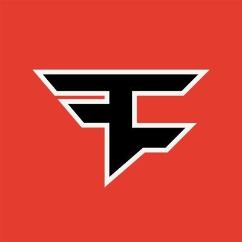

FaZe Clan is an American esports and entertainment organization that competes in various video game tournaments. The organization was founded as a gaming clan on YouTube by players known as Housecat, ClipZ, and Resistance in 2010.
 Team Liquid is a multi-regional professional esports organization based in the Netherlands that was founded in 2000. With the release of StarCraft II: Wings of Liberty, Team Liquid signed their first professional players.
Team Liquid is a multi-regional professional esports organization based in the Netherlands that was founded in 2000. With the release of StarCraft II: Wings of Liberty, Team Liquid signed their first professional players.